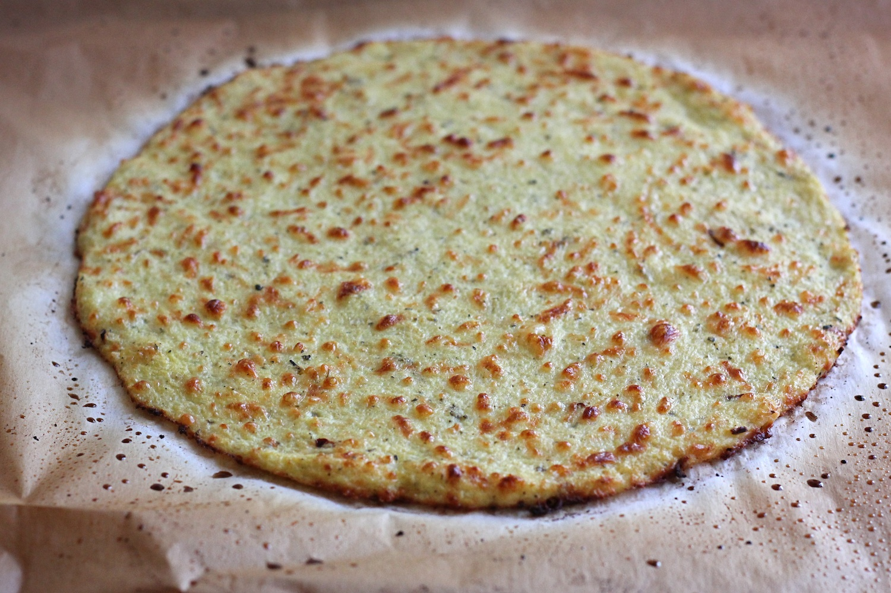

Low Carb Pizza Instructions
Ingredients
- Small head cauliflower
- Half Cup Italian cheese
- One egg
- Teaspoon Oregano
- Teaspoon Basil
- Pizza sauce
- Favorite pizza toppings
Equipment
- Food processor or blender
- Cookie sheet
- Parchment paper
- Clean dish towel

The crust after the initial cooking.
- Food processor or blender
- Cookie sheet
- Parchment paper
- Clean dish towel
The crust after the initial cooking.
Preparation
First begin preheating the oven to 375
Then cut up the cauliflower and use the florets in the food processor until they are about the size of rice.
Next place the processed cauliflower in a microwave safe bowl and heat on high for four minutes. When the time is up dump the riced cauliflower on the towel to allow it to cool.
After the cauliflower is cool enough to touch use the towel to wring the water from it as best you can as this will be important to the texture of the crust.
Now begin to mix together the cauliflower, cheese, egg, and spices with your hopefully clean hands. Next flatten the mixture onto the cookie sheet covered in parchment paper and cook for ten minutes or until the crust begins to brown.
At this point you should take the pizza out put your sauce and toppings on and cook until the cheese is melted and delicious.